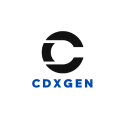

cdxgen


CycloneDX Generator (cdxgen)

cdxgen is a CLI tool, library, REPL, and server to create a valid and compliant CycloneDX Bill of Materials (BOM) containing an aggregate of all project dependencies in JSON format. CycloneDX is a full-stack BOM specification that is easily created, human and machine-readable, and simple to parse. The tool supports CycloneDX specification versions from 1.4 - 1.6.
Supported BOM formats:
- Software (SBOM) - For many languages and container images.
- Cryptography (CBOM) - For Java and Python projects.
- Operations (OBOM) - For Linux container images and VMs running Linux or Windows operating systems.
- Software-as-a-Service (SaaSBOM) - For Java, Python, JavaScript, TypeScript, and PHP projects.
- Attestations (CDXA) - Generate SBOM with templates for multiple standards. Sign the BOM document at a granular level to improve authenticity.
- Vulnerability Disclosure Report (VDR) - Use cdxgen with OWASP depscan to automate the generation of VDR at scale.
Why cdxgen?
Most SBOM tools are like simple barcode scanners. For easy applications, they can parse a few package manifests and create a list of components only based on these files without any deep inspection. Further, a typical application might have several repos, components, and libraries with complex build requirements. Traditional techniques to generate an SBOM per language or package manifest either do not work in enterprise environments or don't provide the confidence required for both compliance and automated analysis. So we built cdxgen - the universal polyglot SBOM generator that is user-friendly, precise, and comprehensive!
Our philosophy:
- Explainability: Don't list, but explain with evidence.
- Precision: Try using multiple techniques to improve precision, even if it takes extra time.
- Personas: Cater to the needs of a range of personas such as security researchers, compliance auditors, developers, and SOC.
- Lifecycle: Support BOM generation for various product lifecycles.
- Machine Learning: Optimize the generated data for Machine Learning (ML) purposes by considering the various model properties.
Documentation
Please visit our GPT app or the documentation site for detailed usage, tutorials, and support documentation.
Sections include:
- Getting Started
- CLI Usage
- Server Usage
- Supported Project Types
- Environment Variables
- Advanced Usage
- Permissions
- Support (Enterprise & Community)
Usage
Installing
npm install -g @cyclonedx/cdxgen
To run cdxgen without installing (hotloading), use the pnpm dlx command.
corepack pnpm dlx @cyclonedx/cdxgen --help
If you are a Homebrew user, you can also install cdxgen via:
$ brew install cdxgen
If you are a Winget user on windows, you can also install cdxgen via:
$ winget install cdxgen
Deno and bun runtime can be used with limited support.
deno install --allow-read --allow-env --allow-run --allow-sys=uid,systemMemoryInfo,gid,homedir --allow-write --allow-net -n cdxgen "npm:@cyclonedx/cdxgen/cdxgen"
You can also use the cdxgen container image with node, deno, or bun runtime versions.
The default version uses Node.js 23
docker run --rm -e CDXGEN_DEBUG_MODE=debug -v /tmp:/tmp -v $(pwd):/app:rw -t ghcr.io/cyclonedx/cdxgen:master -r /app -o /app/bom.json
To use the deno version, use ghcr.io/cyclonedx/cdxgen-deno as the image name.
docker run --rm -e CDXGEN_DEBUG_MODE=debug -v /tmp:/tmp -v $(pwd):/app:rw -t ghcr.io/cyclonedx/cdxgen-deno:master -r /app -o /app/bom.json
For the bun version, use ghcr.io/cyclonedx/cdxgen-bun as the image name.
docker run --rm -e CDXGEN_DEBUG_MODE=debug -v /tmp:/tmp -v $(pwd):/app:rw -t ghcr.io/cyclonedx/cdxgen-bun:master -r /app -o /app/bom.json
In deno applications, cdxgen could be directly imported without any conversion. Please see the section on integration as a library
import { createBom, submitBom } from "npm:@cyclonedx/cdxgen@^11.0.0";
Getting Help
cdxgen [command]
Commands:
cdxgen completion Generate bash/zsh completion
Options:
-o, --output Output file. Default bom.json [default: "bom.json"]
-t, --type Project type. Please refer to https://cyclonedx.github.io/cdxgen/#/PROJECT_TYPES for supp
orted languages/platforms. [array]
--exclude-type Project types to exclude. Please refer to https://cyclonedx.github.io/cdxgen/#/PROJECT_TY
PES for supported languages/platforms.
-r, --recurse Recurse mode suitable for mono-repos. Defaults to true. Pass --no-recurse to disable.
[boolean] [default: true]
-p, --print Print the SBOM as a table with tree. [boolean]
-c, --resolve-class Resolve class names for packages. jars only for now. [boolean]
--deep Perform deep searches for components. Useful while scanning C/C++ apps, live OS and oci i
mages. [boolean]
--server-url Dependency track url. Eg: https://deptrack.cyclonedx.io
--skip-dt-tls-check Skip TLS certificate check when calling Dependency-Track. [boolean] [default: false]
--api-key Dependency track api key
--project-group Dependency track project group
--project-name Dependency track project name. Default use the directory name
--project-version Dependency track project version [string] [default: ""]
--project-id Dependency track project id. Either provide the id or the project name and version togeth
er [string]
--parent-project-id Dependency track parent project id [string]
--required-only Include only the packages with required scope on the SBOM. Would set compositions.aggrega
te to incomplete unless --no-auto-compositions is passed. [boolean]
--fail-on-error Fail if any dependency extractor fails. [boolean]
--no-babel Do not use babel to perform usage analysis for JavaScript/TypeScript projects. [boolean]
--generate-key-and-sign Generate an RSA public/private key pair and then sign the generated SBOM using JSON Web S
ignatures. [boolean]
--server Run cdxgen as a server [boolean]
--server-host Listen address [default: "127.0.0.1"]
--server-port Listen port [default: "9090"]
--install-deps Install dependencies automatically for some projects. Defaults to true but disabled for c
ontainers and oci scans. Use --no-install-deps to disable this feature.
[boolean] [default: true]
--validate Validate the generated SBOM using json schema. Defaults to true. Pass --no-validate to di
sable. [boolean] [default: true]
--evidence Generate SBOM with evidence for supported languages. [boolean] [default: false]
--spec-version CycloneDX Specification version to use. Defaults to 1.6
[number] [choices: 1.4, 1.5, 1.6] [default: 1.6]
--filter Filter components containing this word in purl or component.properties.value. Multiple va
lues allowed. [array]
--only Include components only containing this word in purl. Useful to generate BOM with first p
arty components alone. Multiple values allowed. [array]
--author The person(s) who created the BOM. Set this value if you're intending the modify the BOM
and claim authorship. [array] [default: "OWASP Foundation"]
--profile BOM profile to use for generation. Default generic.
[choices: "appsec", "research", "operational", "threat-modeling", "license-compliance", "generic", "machine-learning",
"ml", "deep-learning", "ml-deep", "ml-tiny"] [default: "generic"]
--exclude Additional glob pattern(s) to ignore [array]
--export-proto Serialize and export BOM as protobuf binary. [boolean] [default: false]
--proto-bin-file Path for the serialized protobuf binary. [default: "bom.cdx"]
--include-formulation Generate formulation section with git metadata and build tools. Defaults to false.
[boolean] [default: false]
--include-crypto Include crypto libraries as components. [boolean] [default: false]
--standard The list of standards which may consist of regulations, industry or organizational-specif
ic standards, maturity models, best practices, or any other requirements which can be eva
luated against or attested to.
[array] [choices: "asvs-5.0", "asvs-4.0.3", "bsimm-v13", "masvs-2.0.0", "nist_ssdf-1.1", "pcissc-secure-slc-1.1", "scv
s-1.0.0", "ssaf-DRAFT-2023-11"]
--json-pretty Pretty-print the generated BOM json. [boolean] [default: false]
--min-confidence Minimum confidence needed for the identity of a component from 0 - 1, where 1 is 100% con
fidence. [number] [default: 0]
--technique Analysis technique to use
[array] [choices: "auto", "source-code-analysis", "binary-analysis", "manifest-analysis", "hash-comparison", "instrume
ntation", "filename"]
--auto-compositions Automatically set compositions when the BOM was filtered. Defaults to true
[boolean] [default: true]
-h, --help Show help [boolean]
-v, --version Show version number [boolean]
All boolean arguments accept --no prefix to toggle the behavior.
Example
Minimal example.
cdxgen -o bom.json
For a java project. cdxgen would automatically detect maven, gradle, or sbt and build bom accordingly
cdxgen -t java -o bom.json
To print the SBOM as a table pass -p argument.
cdxgen -t java -o bom.json -p
To recursively generate a single BOM for all languages pass -r argument.
cdxgen -r -o bom.json
The default specification used by cdxgen is 1.5. To generate BOM for a different specification version, such as 1.6 or 1.4, pass the version number using the --spec-version argument.
# 1.6 is unsupported by most tools
cdxgen -r -o bom.json --spec-version 1.6
# 1.4 is supported by most tools
cdxgen -r -o bom.json --spec-version 1.4
To generate SBOM for C or Python, ensure Java >= 21 is installed.
# Install java >= 21
cdxgen -t c -o bom.json
NOTE: cdxgen is known to freeze with Java 8 or 11, so ensure >= 21 is installed and JAVA_HOME environment variable is configured correctly. If in doubt, use the cdxgen container image.
Universal SBOM
By passing the type argument -t universal, cdxgen could be forced to opportunistically collect as many components and services as possible by scanning all package, container, and Kubernetes manifests. The resulting SBOM could have over a thousand components, thus requiring additional triaging before use with traditional SCA tools.
SBOM server
Invoke cdxgen with --server argument to run it in server mode. By default, it listens to port 9090, which can be customized with the arguments --server-host and --server-port.
cdxgen --server
Or use the container image.
docker run --rm -v /tmp:/tmp -p 9090:9090 -v $(pwd):/app:rw -t ghcr.io/cyclonedx/cdxgen -r /app --server --server-host 0.0.0.0
Use curl or your favorite tool to pass arguments to the /sbom route.
Server arguments
Arguments can be passed either via the query string or as a JSON body. Please refer to Server Usage
Health endpoint
Use the /health endpoint to check if the SBOM server is up and running.
curl "http://127.0.0.1:9090/health"
Scanning a local path
curl "http://127.0.0.1:9090/sbom?path=/Volumes/Work/sandbox/vulnerable-aws-koa-app&multiProject=true&type=js"
Scanning a git repo
curl "http://127.0.0.1:9090/sbom?url=https://github.com/HooliCorp/vulnerable-aws-koa-app.git&multiProject=true&type=js"
If you need to pass credentials to authenticate.
curl "http://127.0.0.1:9090/sbom?url=https://<access_token>@github.com/some/repo.git&multiProject=true&type=js"
curl "http://127.0.0.1:9090/sbom?url=https://<username>:<password>@bitbucket.org/some/repo.git&multiProject=true&type=js"
You can POST the arguments.
curl -H "Content-Type: application/json" http://localhost:9090/sbom -XPOST -d $'{"url": "https://github.com/HooliCorp/vulnerable-aws-koa-app.git", "type": "nodejs", "multiProject": "true"}'
Docker compose
git clone https://github.com/cyclonedx/cdxgen.git
docker compose up
War file support
cdxgen can generate a BOM file from a given war file.
# cdxgen -t java app.war
cdxgen app.war
Resolving class names
Sometimes, it is necessary to resolve class names contained in jar files. By passing an optional argument --resolve-class, it is possible to get cdxgen to create a separate mapping file with the jar name (including the version) as the key and class names list as a value.
cdxgen -t java --resolve-class -o bom.json
This would create a bom.json.map file with the jar - class name mapping. Refer to these examples to learn about the structure.
Resolving licenses
cdxgen can automatically query public registries such as maven, npm, or nuget to resolve the package licenses. This is a time-consuming operation and is disabled by default. To enable, set the environment variable FETCH_LICENSE to true, as shown. Ensure that GITHUB_TOKEN is set or provided by built-in GITHUB_TOKEN in GitHub Actions, otherwise rate limiting might prevent license resolving.
export FETCH_LICENSE=true
Dependency Tree
cdxgen can retain the dependency tree under the dependencies attribute for a small number of supported package manifests. These are currently limited to:
- package-lock.json
- yarn.lock
- pnpm-lock.yaml
- Maven (pom.xml)
- Gradle
- Scala SBT
- Python (requirements.txt, setup.py, pyproject.toml, poetry.lock)
- .NET (packages.lock.json, project.assets.json, paket.lock, .nuspec/.nupkg)
- Go (go.mod)
- PHP (composer.lock)
- Ruby (Gemfile.lock)
- Rust (Cargo.lock)
Plugins
cdxgen could be extended with external binary plugins to support more SBOM use cases. These are now installed as an optional dependency.
sudo npm install -g @cyclonedx/cdxgen-plugins-bin
Docker / OCI container support
docker type is automatically detected based on the presence of values such as sha256 or docker.io prefix etc in the path.
cdxgen odoo@sha256:4e1e147f0e6714e8f8c5806d2b484075b4076ca50490577cdf9162566086d15e -o /tmp/bom.json
You can also pass -t docker with repository names. Only the latest tag would be pulled if none was specified.
cdxgen shiftleft/scan-slim -o /tmp/bom.json -t docker
You can also pass the .tar file of a container image.
docker pull shiftleft/scan-slim
docker save -o /tmp/slim.tar shiftleft/scan-slim
podman save -q --format oci-archive -o /tmp/slim.tar shiftleft/scan-slim
cdxgen /tmp/slim.tar -o /tmp/bom.json -t docker
Podman in rootless mode
Setup podman in either rootless or remote mode
Do not forget to start the podman socket required for API access on Linux.
systemctl --user enable --now podman.socket
systemctl --user start podman.socket
podman system service -t 0 &
Generate OBOM for a live system
You can use the obom command to generate an OBOM for a live system or a VM for compliance and vulnerability management purposes. Windows and Linux operating systems are supported in this mode.
# obom is an alias for cdxgen -t os
obom
# cdxgen -t os
This feature is powered by osquery, which is installed along with the binary plugins. cdxgen would opportunistically try to detect as many components, apps, and extensions as possible using the default queries. The process would take several minutes and result in an SBOM file with thousands of components of various types, such as operating-system, device-drivers, files, and data.
Generate Cryptography Bill of Materials (CBOM)
Use the cbom alias to generate a CBOM. This is currently supported only for Java projects.
cbom -t java
# cdxgen -t java --include-crypto -o bom.json .
Generating SaaSBOM and component evidences
See evinse mode in the advanced documentation.
BOM signing
cdxgen can sign the generated BOM json file to increase authenticity and non-repudiation capabilities. To enable this, set the following environment variables.
- SBOM_SIGN_ALGORITHM: Algorithm. Example: RS512
- SBOM_SIGN_PRIVATE_KEY: Location to the RSA private key
- SBOM_SIGN_PUBLIC_KEY: Optional. Location to the RSA public key
To generate test public/private key pairs, you can run cdxgen by passing the argument --generate-key-and-sign. The generated json file would have an attribute called signature, which could be used for validation. jwt.io is a known site that could be used for such signature validation.
Verifying the signature
Use the bundled cdx-verify command, which supports verifying a single signature added at the bom level.
npm install -g @cyclonedx/cdxgen
cdx-verify -i bom.json --public-key public.key
Custom verification tool (Node.js example)
There are many libraries available to validate JSON Web Tokens. Below is a javascript example.
# npm install jws
const jws = require("jws");
const fs = require("fs");
// Location of the SBOM json file
const bomJsonFile = "bom.json";
// Location of the public key
const publicKeyFile = "public.key";
const bomJson = JSON.parse(fs.readFileSync(bomJsonFile, "utf8"));
// Retrieve the signature
const bomSignature = bomJson.signature.value;
const validationResult = jws.verify(bomSignature, bomJson.signature.algorithm, fs.readFileSync(publicKeyFile, "utf8"));
if (validationResult) {
console.log("Signature is valid!");
} else {
console.log("SBOM signature is invalid :(");
}
Automatic usage detection
For node.js projects, lock files are parsed initially, so the SBOM would include all dependencies, including dev ones. An AST parser powered by babel-parser is then used to detect packages that are imported and used by non-test code. Such imported packages would automatically set their scope property to required in the resulting SBOM. You can turn off this analysis by passing the argument --no-babel. Scope property would then be set based on the dev attribute in the lock file.
This attribute can be later used for various purposes. For example, dep-scan uses this attribute to prioritize vulnerabilities. Unfortunately, tools such as dependency track, do not include this feature and might over-report the CVEs.
With the argument --required-only, you can limit the SBOM only to include packages with the scope "required", commonly called production or non-dev dependencies. Combine with --no-babel to limit this list to only non-dev dependencies based on the dev attribute being false in the lock files.
For go, go mod why command is used to identify required packages. For php, composer lock file is parsed to distinguish required (packages) from optional (packages-dev).
Automatic services detection
cdxgen can automatically detect names of services from YAML manifests such as docker-compose, Kubernetes, or Skaffold manifests. These would be populated under the services attribute in the generated SBOM. With evinse, additional services could be detected by parsing common annotations from the source code.
Conversion to SPDX format
Use the CycloneDX CLI tool for advanced use cases such as conversion, diff and merging.
Including .NET Global Assembly Cache dependencies in the results
For dotnet and dotnet-framework, SBOM could include components without a version number. Often, these components begin with the prefix System..
Global Assembly Cache (GAC) dependencies (System Runtime dependencies) must be made available in the build output of the project for version detection. A simple way to have the dotnet build copy the GAC dependencies into the build directory is to place the file Directory.Build.props into the root of the project and ensure the contents include the following:
<Project xmlns="http://schemas.microsoft.com/developer/msbuild/2003">
<ItemDefinitionGroup>
<Reference>
<Private>True</Private>
</Reference>
</ItemDefinitionGroup>
</Project>
Then, run cdxgen cli with the --deep argument.
License
Permission to modify and redistribute is granted under the terms of the Apache 2.0 license. See the LICENSE file for the full license.
Integration as library
cdxgen is ESM only and could be imported and used with both deno and Node.js >= 20
Minimal example:
import { createBom, submitBom } from "npm:@cyclonedx/cdxgen@^9.0.1";
See the Deno Readme for detailed instructions.
import { createBom, submitBom } from "@cyclonedx/cdxgen";
// bomNSData would contain bomJson
const bomNSData = await createBom(filePath, options);
// Submission to dependency track server
const dbody = await submitBom(args, bomNSData.bomJson);
Contributing
Please check out our contribute to CycloneDX/cdxgen documentation if you are interested in helping.
Before raising a PR, please run the following commands.
corepack enable pnpm
pnpm install --config.strict-dep-builds=true
# Generate types using jsdoc syntax
pnpm run gen-types
# Run biomejs formatter and linter with auto fix
pnpm run lint
# Run jest tests
pnpm test
Testing main branch
Use pnpm add -g command to quickly test the main branch.
corepack pnpm bin -g
corepack pnpm setup
corepack pnpm add -g --allow-build @appthreat/sqlite3 https://github.com/CycloneDX/cdxgen
cdxgen --help